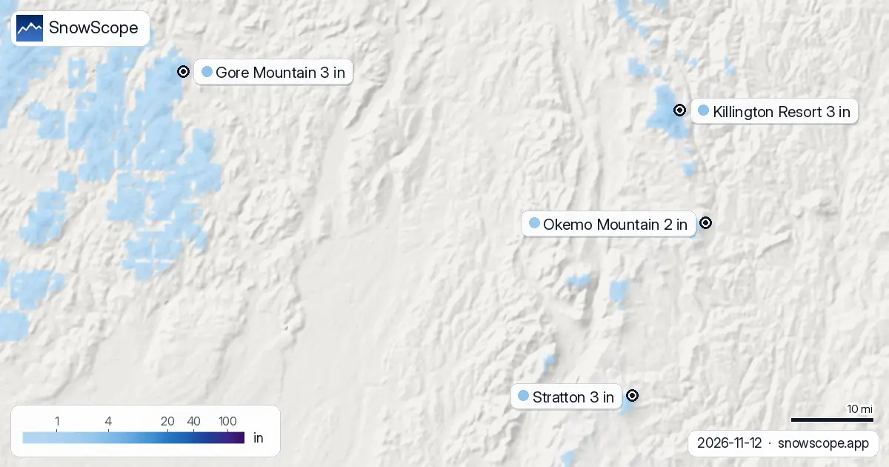

Più neve dell'inverno scorso nel Nord-est degli USA? 0 località su 4 avanti (12 novembre)
C'è più neve di un anno fa? Abbiamo confrontato oggi con il 12 novembre dell'inverno scorso in 4 località nel Nord-est degli USA: 0 hanno più neve ora, secondo il nostro modello neve. La differenza maggiore è a Gore Mountain: 0 in (1 cm) oggi contro 3 in (7 cm) un anno fa. Il confronto con l'inverno scorso è divertente, ma alla montagna interessa solo la prossima perturbazione.
Le previsioni neve in tempo reale per Killington Resort nell'app SnowScopeAltezza neve, allerte powder e mappa 3D, gratis.
Località per località
Killington Resort a 2.651 ft (808 m) ha oggi 2 in (5 cm): come i 2 in (5 cm) del 12 novembre dell'inverno scorso. Per questa data, l'altezza abituale è 0 in (1 cm).
A Gore Mountain (2.316 ft (706 m)) oggi ci sono 0 in (1 cm), meno che i 3 in (7 cm) del 12 novembre dell'inverno scorso. Un anno normale ha 0 in (0 cm) in questa data.
Stratton a 2.936 ft (895 m) ha oggi 0 in (1 cm): meno che i 2 in (4 cm) del 12 novembre dell'inverno scorso. Per questa data, l'altezza abituale è 0 in (0 cm).
A Okemo Mountain (2.238 ft (682 m)) oggi ci sono 0 in (0 cm), meno che i 2 in (4 cm) del 12 novembre dell'inverno scorso. Un anno normale ha 0 in (0 cm) in questa data.
| Località | Altezza neve | Neve fresca, 72 h | In arrivo, prossimi giorni | Quota max |
|---|---|---|---|---|
| Killington Resort | 3 in (8 cm) | 3 in (8 cm) | 3 in (8 cm) | 4.140 ft (1.262 m) |
| Gore Mountain | 3 in (7 cm) | 3 in (7 cm) | 4 in (9 cm) | 3.583 ft (1.092 m) |
| Stratton | 3 in (7 cm) | 3 in (8 cm) | 4 in (11 cm) | 3.881 ft (1.183 m) |
| Okemo Mountain | 2 in (5 cm) | 2 in (6 cm) | 5 in (13 cm) | 3.320 ft (1.012 m) |
Cosa hanno visto le stazioni
In questa zona non abbiamo stazioni con dati misurati alla stessa data dell'inverno scorso, quindi il confronto usa solo il nostro modello neve.
Da dove viene la differenza
Finora quest'inverno a Killington Resort il nostro modello conta 0 giorni che hanno aggiunto 4 in (10 cm) o più e 0 giorni che hanno perso 2 in (5 cm) o più per fusione, pioggia o vento.
Quest'inverno a Gore Mountain: 0 giorni hanno guadagnato 4 in (10 cm) o più di neve e 0 giorni ne hanno persi 2 in (5 cm) o più per fusione, pioggia o vento, secondo il nostro modello.
Finora quest'inverno a Stratton il nostro modello conta 0 giorni che hanno aggiunto 4 in (10 cm) o più e 0 giorni che hanno perso 2 in (5 cm) o più per fusione, pioggia o vento.
A questo punto dell'inverno una perturbazione in più o in meno fa tutta la differenza; non leggerci il resto della stagione.
L'inverno scorso in cifre
Killington Resort a questa quota: l'inverno scorso (2025-26) è arrivato al massimo a 25 in (64 cm) il 26 gennaio.
L'inverno scorso (2025-26), Gore Mountain ha raggiunto il suo massimo di 33 in (84 cm) il 26 gennaio a questa quota.
Stratton a questa quota: l'inverno scorso (2025-26) è arrivato al massimo a 26 in (67 cm) il 26 gennaio.
Consigli per sciatori
- Un inizio migliore dell'anno scorso non è una promessa per le vacanze: segui la previsione, non solo la neve già a terra.
- I valori del modello descrivono un'area a una quota; una stazione misura un punto. Leggi entrambi prima di decidere.
- Neve sulla mappa non significa località aperta: controlla impianti e date sul suo sito.
- Prima di ogni uscita in fuoripista o scialpinismo leggi il bollettino valanghe ufficiale (link qui sotto).
Su questi numeri
Le altezze neve delle località sono la neve più alta sui pendii superiori secondo il modello neve di SnowScope (circa 1 km, calcolo del 12 novembre); sono stime per un'area, non una misura in un punto. I valori delle stazioni sono misure alla data indicata. Le previsioni possono cambiare. Leggi sempre il bollettino valanghe ufficiale prima del fuoripista.
Bollettini valanghe ufficiali: Mount Washington Avalanche Center
Cita questo articolo
Per ricerca, didattica o stampa: numeri e grafici sono liberamente riutilizzabili con licenza CC BY 4.0 citando così.
SnowScope (2026), Più neve dell'inverno scorso nel Nord-est degli USA? 0 località su 4 avanti (12 novembre), https://snowscope.app/blog/it/2026/11/us-northeast-snow-this-season-vs-last-season-12-november-2026.html, consultato il 2026-11-12
SnowScope (Atlas Labs). (2026, November 12). Più neve dell'inverno scorso nel Nord-est degli USA? 0 località su 4 avanti (12 novembre). SnowScope snow reports. https://snowscope.app/blog/it/2026/11/us-northeast-snow-this-season-vs-last-season-12-november-2026.html
BibTeX
@misc{snowscope2026usnortheastsnowthisseaso,
author = {{SnowScope (Atlas Labs)}},
title = {Più neve dell'inverno scorso nel Nord-est degli USA? 0 località su 4 avanti (12 novembre)},
year = {2026},
month = nov,
howpublished = {\url{https://snowscope.app/blog/it/2026/11/us-northeast-snow-this-season-vs-last-season-12-november-2026.html}},
note = {Published 2026-11-12 20:02 UTC; accessed 2026-11-12}
}· CC BY 4.0 · Metodi, dati e strumenti →
Killington Resort: neve e temperatura per quota, quest'inverno vs lo scorso (strumenti) →
Segui Killington Resort
Gratis: un messaggio quando arriva la neve e il meteo ogni mattina.
Altri bollettini neve

Una lista pratica per Stowe, Vermont: strati, protezione del viso, maschera, lamine affilate e scaldamani, legata alla neve di 46 inverni passati sul Mount Mansfield.

Magic Mountain a Londonderry, Vermont: una piccola stazione indipendente con boschi ripidi, una vecchia seggiovia rossa e poca neve naturale. Cinque cose da sapere, con la neve di 46 inverni passati.

La nostra previsione mette lo zero termico nel Nord-est degli USA tra 0 ft (0 m) e 4.593 ft (1.400 m) nei giorni a venire. Il giovedì 12 novembre, …